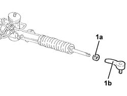

4110B14 STEERING LINKS - R+R WITH STEERING BOX REMOVED
- Path
- Procedures > 41 STEERING UNIT > 4110 STEERING CONTROL AND LINKAGE > 4110B STEERING CONTROL LINKAGE > 4110B14 STEERING LINKS - R+R WITH STEERING BOX REMOVED
- Kind
- repair procedure (removal / refitting; the operation number is the code)
- Applies to
- all engines; all production periods
- Interactive page
- https://sloeber94.github.io/elrnDB-aGt/en/#/125001402
Applies to: all engines; all production periods
 Removing
Removing
 Refitting
RefittingMeasure the length of the steering rods to be used for refitting.
1. Loosen the locknuts (1a) and remove the steering rods (1b).

Applies to: all engines; all production periods
Refitting
RemovingPlace the steering rods back in their housings and tighten them until the length measured at the removal is restored.
Tighten the locknuts fixing the steering rods to the recommended torque.
 | Fastening | Component | Ø | Value (daNm) |
|---|---|---|---|---|
- | Nut | ADJUSTABLE STEERING LINKS | M14 | (Power assisted steering box side) 4.5 ÷ 5.5 |